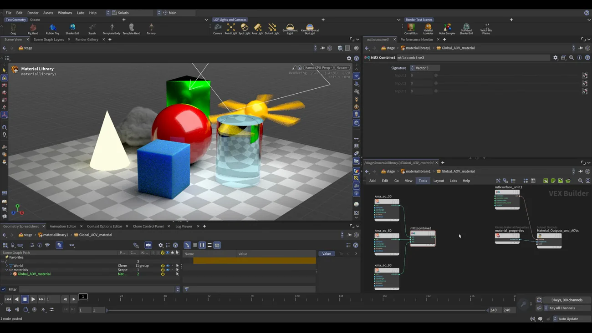

Global AOV で全ジオメトリに一括でパスを出す
出典: Houdini 22 | How to Use Global AOVs （SideFX 公式「Houdini 22 How-To」の1本 / Houdini 22 / 4:29 / 英語）。 このページは、上記の動画を見ながら自分用にまとめた日本語の学習メモです。SideFX 公式の翻訳ではありません。
新機能の狙い
AOV を出すためのマテリアルを、画面に写っている全ジオメトリに一括で当てる機能です。
AOV そのものの説明は動画では省略されていて（既知の前提として扱われています）、 新機能の使い方に絞った4分半の回になっています。
題材は multiband ambient occlusion — コンポジット側が AO パスを細かく制御できるようにする、業界で一般的な手法です。
手順
1. テストシーンを用意する
Solaris で Noise Sampler を置きます。 異なるマテリアル・発光・ライト・カメラが一式入ったテストシーンが手に入るので、検証に便利です。
2. マテリアルを作る
- Material Library → Karma Material Builder を作り
Global_AOV_Materialと命名します - 中に入ってディスプレイスメントを削除します（使いません）
- MaterialX Surface Unlit を作って surface に繋ぎ、既定のノードは消します
- Ambient Occlusion を3つ作り、cone の値を
30/60/90にします（90 が既定値）。 ノード名もkma_ao_30/kma_ao_60/kma_ao_90にしておくと分かりやすくなります - MaterialX Combine 3（Signature = Vector 3）で3つを1つのベクタにまとめます
- Karma AOV ノードを作り
multiband_AOVと命名。Combine の出力を繋ぎ、 その出力を MaterialX Surface Unlit の emission へ、 さらにこのマテリアルの AOV としても指定します

cone の角度を変えた AO を3本、RGB に詰めるのが multiband の中身です。 コンポジットでは R だけ、G だけといった具合に取り出して混ぜられます。 第2回で出てきたパックテクスチャと発想は同じで、1枚に3種類詰める形になっています。
3. 全ジオメトリに当てる
- Material Library に戻って Auto-fill Materials。パスが正しい場所を指しているか確認します
- Karma Setup レシピを追加します。警告が出るのはカメラが未指定だからなので、カメラを選びます
- Image Output タブを下にたどって Global AOV Material の欄に、作ったマテリアルを指定します
これで全ジオメトリに当たります。1つずつ割り当てる必要がありません。
Render Var の仕組み（ここを知らないと壊す）
| 段階 | 何が起きるか |
|---|---|
| Karma AOV の Create Render Var を有効にする | Material Library が対応するマテリアルの下に render var を作ってくれます |
| さらに | 標準の場所へ自動で参照が張られます。標準の場所とは Karma Render Settings の Render Products and Vars です |
| 下流の Karma Render Settings | render var を自動で検出してレンダーで使えるようにします |
この場所を変えると参照が切れます。自動で繋がっているぶん、動かすと壊れます。 後からさらに調整したい場合は Render Var Edit ノードを使います。
重要な制約
この仕組みは Karma 固有の慣習で、USD の標準でも他のレンダーデリゲートの標準でもありません。 動画でも明言されています。
Karma 以外では使えないので、他のレンダラも使うパイプラインでは前提にしないほうがよさそうです。
この回のまとめ
- Global AOV Material に指定したマテリアルが、全ジオメトリに一括で当たります
- Noise Sampler はマテリアル・発光・ライト・カメラが揃ったテストシーンなので検証に便利です
- multiband AO は cone を 30 / 60 / 90 にした AO を3本、Combine 3（Vector 3）で RGB に詰めます
- Karma AOV の出力は emission に繋ぎ、かつマテリアルの AOV としても指定します
- Create Render Var が render var を作り、Karma Render Settings の Render Products and Vars に参照が張られます。この場所を動かすと切れます
- 調整は Render Var Edit ノードで行います
- Karma 固有の慣習です。USD 標準でも他のデリゲートの標準でもありません